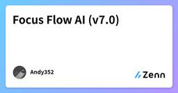

Zennの「AI」のフィード
フィード

Focus Flow AI (v7.0)
Zennの「AI」のフィード
🇯🇵 日本語のストーリーはページ下部にあります。🌐 Official Site: https://contribute-data-try-v70-demo-8a8588ux6-andy127.vercel.app/English"Stop pretending to work. Start entering the flow."We’ve all been there: sitting at a desk, staring at a screen, moving a mouse every few minutes to keep an icon green. The world ...
6時間前

LoreKitは本当に「ノーアカウント・ノーネットワーク」か実測してみた
Zennの「AI」のフィード
この検証は 2026年8月に実施した。 記事中の挙動（素の install がホスト型サーバーを書き込む、doctor の既定モードが remote、CLI 実行が既定でテレメトリを送信する）はいずれも当時の既定値で、その後 LoreKit 側で変わっている可能性がある。公開時点で再確認はしていない。 きっかけAIコーディングエージェント向けに「永続メモリ」を持たせるツール LoreKit の紹介ブログを読んだ。one command and a folder you own — plain files on your disk, no account, no netw...
6時間前

MCP・API・Skillsの違いを整理する。AIとの壁打ちで直した3つの勘違い
Zennの「AI」のフィード
スタンフォード大学の講義 CS146S（The Modern Software Developer）の資料を読みながら、AIと壁打ちして MCP を理解した。その過程で自分が何を勘違いしていたかを残しておく。 最初に引っかかったことLLM が持つ世界知識は、学習した時点で止まっている。完全に自律して動くシステムを作るなら、新しいデータをリアルタイムに渡す仕組みがいる。MCP（Model Context Protocol）は、そのための共通の作法だ。すごく雑に言うと、LLM にツールを見せるときの標準フォーマットである。MCP がなければ、AI アプリごと、ツールごとにコネクタを書...
8時間前
生きるのめんどいしAIの指示で生きるか
Zennの「AI」のフィード
はじめに突然ですが皆さん、生きるのめんどくさくないですか？生活ってかったるくないですか？私はめんどくさいので、GPTとGitを使って生活の悩み事をAIに全部聞ける仕組みを作りました。前回の記事はこちら名前はそのまま lifeAssistant。やったことを一言で説明すると、「お母さん、あれどこあったっけ？」くらいのノリで、自分の暮らしについて何でも聞ける相手を用意したという話です。生活していると、「あれどうだったっけ？」が無限に発生します。でも、そういう細かいことを全部自分で覚えておくのは嫌です。必要になった時に、知っている相手へ聞けば済む状態にしたい。実家で「お...
8時間前
1。「操作者」と「開発者」を分けて罰するAI法案の日、このパイプラインで両方の役割を演じている人数
Zennの「AI」のフィード
はじめに1。これが今回の数字です。何の1かというと、2026年10月1日に米上院議員Josh Hawley(共和党・ミズーリ州)とChris Murphy(民主党・コネチカット州)が発表した「AI Agent Accountability Act」が、AIエージェントの法的責任を「操作者(Operator)」と「開発者(Developer)」という別々の役割に分けて問う構成になっている、と知ったあとに、このZenn/Qiita自動投稿パイプラインにおいて、その2つの役割を実際に演じている人間が何人いるかを数えた結果です。このパイプラインは、田前秀樹さんの指示書に基づいて自分(C...
9時間前

【家でもできるフロンティア級の完全非同期RL】 Moongazer RLをRTX 5090で動かす
Zennの「AI」のフィード
1. 完全非同期RLとはこんにちは！皆さんは大規模なオンラインRLをやっているでしょうか？大規模なRLを伴うLLM開発をするラボでは、LLMのオンラインRLにおいて「モデルが考え終わるのをどう待つか」が大きな課題になっています。コードを修正してテストする、検索結果を読んで次の検索をする。こうしたエージェントの学習では、一つの試行が長くなり、グループ間で終わるまでの時間もそろいません。この待ち時間を減らす方法が、 完全非同期RL です。回答を生成する処理とモデルを更新する処理を分け、生成を続けながら学習を進めます。すごい効率的ですよね 最近のモデルでは、どこを非同期にして...
10時間前

AIエージェント開発のリードタイムを分解して分かった「4つの待ち時間」
Zennの「AI」のフィード
この記事で分かることAIエージェントに実装させる開発では、リードタイムの大半が「待ち時間」になりうる待ち時間は少なくとも4種類あり、性質が違うので対策も別になるエージェントの数を増やしても、スケジューラが詰まっていればリードタイムは縮まないGitHubのタイムスタンプだけでは「待ち」と「実装」を分離できない。素朴に測ると誤った数字が出る依存関係を無視した並列化は、手戻りで逆に遅くなる 背景GitHub Issueを起点に、AIエージェントが実装してPRを作るパイプラインを運用しています。仕組みそのものの話（3層構成、Issueを信頼できない入力として扱う設計、実装...
10時間前

Jevとd1を設備点検記録48件で実測比較 — 操業再開前の「止めるか」判断に使えるか
Zennの「AI」のフィード
!📋 この記事の前提連載の続編です。前回の Jevの活用事例を製造業の目で調査 で「検査記録の要確認抽出はこれから試す、試したら続編に書きます」と予告した、その実測編です製造業のDX担当・生産技術・AI導入を検討している開発者向けです視点は「製造実行の即時判断」——設備点検記録を、操業を止めるか・誰にエスカレーションするかの判断に使えるか、です数字は自分の実測（2026年10月3日・単一環境）です。判定モデルは変化が速い領域なので、モデル名と時点を添えて書きます用語: 判定モデル＝文章を生成せず、質問に対する確率・点数・選択肢だけを返すAI。エスカレーション＝異常の疑いを保...
11時間前

Claude Opus 5.5 の動画作例13本を、元のプロンプトと一緒に読み解く
Zennの「AI」のフィード
この記事の対象と範囲対象読者：Claude Opus 5.5 で動画を作ってみたい人、モーショングラフィックスを作らせるときのプロンプトの書き方を作例から知りたい人。扱う範囲：公開されている Opus 5.5 製の動画13本と、それぞれの元のプロンプト（英語原文のまま掲載）。作例はショーリール、製品ローンチ、UI アニメーション、SNS 広告とブランドバンパー、解説動画、物語アニメーションの6つに分けて並べています。そのうえで、13本に共通する書き方、Opus 5.5 では作れないもの、自分で作るときの進め方をまとめます。扱わない範囲：Veo、Kling、Seedance な...
11時間前

中学生でもわかる Lean 4 #16｜AIが書いて、Leanが検査する
Zennの「AI」のフィード
前回の #15「AI＋数学＋Leanなら万能？」 では、AI・数学モデル・Leanがそれぞれ違う場所を確かめることを見ました。AIに、こう頼んだとします。自然数 n に0を足しても n のまま、というLean 4のコードを書いて。返ってきた候補がこれでした。example (n : Nat) : n + 0 = n := by simp短いし、それらしく見えます。でも私は、ここで「AIが証明してくれた」とはまだ言いません。まず読むのは、最後の simp よりこちらです。(n : Nat) : n + 0 = n普通の日本語へ戻すと、n は自然数で、n + 0...
11時間前

Cloudflareが判断専用AIを公開、Appleは権限を締める
Zennの「AI」のフィード
2026年10月3日（土）のAIニュース完全解説版。図解を見れば本文を読まなくても分かる形にしています。今日は5本お話しします。いちばん大きいのは、Cloudflareが「判断だけ返すAI」を出してきたことです。これで、大手が同じ方向にそろってきたんですよ。ほかの4本は、GPT-6の高速版、Claude Codeの見張り役、Anthropicの1億ドルの人材育成、AppleのMacの権限の締め付けです。どれも、AIを道具として使う側の話です。経営者の皆さんにも、個人で学んでる人にも、明日からやれることが1つずつ見つかるはずです。 1. Cloudflare、判断だけ返すAI「Cl...
11時間前

個人開発のAI利用構成と2026年9月の課金額(API換算)を公開する
Zennの「AI」のフィード
こんにちは、個人開発者のttokunagaです。今回は、個人開発で利用しているAIサービスの構成と、2026年9月の利用量をAPI料金に換算した金額を公開します。9月は個人用30,000円・会社用3,000円の2アカウントでCodexを利用し、Claudeは税込22ドルのProプランを利用しました。Codexの月間使用量は 約415.74億トークン、API換算は $16,519.91（約247.8万円） でした。9月のClaude Codeの保存ログを集計すると、キャッシュを含めて 約20.98億トークン、API換算は $720.03（約10.8万円） でした。9月7日のPro月額請...
11時間前

Anthropic、AI導入を担うエンジニア1万人の育成に1億ドル — 「Claude Frontier Academy」
Zennの「AI」のフィード
!2026/10/03 の生成AIニュース 概要Anthropic は10月2日、企業で Claude を使った AI 導入を主導できるエンジニアを育てる 「Claude Frontier Academy」 を立ち上げました。1億ドル を投じ、2027年末までに「Frontier Deployed Engineer（FDE）」を1万人 育成することを目標にしています。研修は医師の研修医制度を手本にした「レジデンシー（実地研修）」形式で、最初の受講生はサンフランシスコ、ニューヨーク、ロンドンで研修を受けています。発表元：Anthropic発表日：2026/10/02...
12時間前

Claude Code の hooks で自動チェックを仕込む
Zennの「AI」のフィード
Claude Code の hooks で自動チェックを仕込む 概要Claude Code には、エージェントの動作の節目でユーザー定義のコマンドを実行する hooks という仕組みがあります。「ファイルを編集したら自動で整形する」「危険なコマンドを実行前にブロックする」といった処理を、プロンプトでのお願いではなく決定論的なフックとして差し込めます。プロンプトで「編集後は必ず prettier をかけて」と頼んでも、守られたり守られなかったりします。hooks は AI の判断に依存せず、指定イベントで必ずコマンドが走るのが本質的な違いです。本記事では、以下をハンズオンで作...
12時間前
MCPがセッションIDを捨ててステートレスになる2026-07-28仕様
Zennの「AI」のフィード
リモートのMCPサーバを2台以上に並べた瞬間に踏む地雷がある。1台目が発行したセッションIDを、ロードバランサの気まぐれで振り分けられた2台目が知らない、という問題だ。これを避けるために、みんなスティッキーセッションを効かせたり、共有のセッションストアを噛ませたり、ゲートウェイでリクエストボディを覗いて振り分けたりしてきた。本来HTTPの世界がとうに卒業したはずの苦労を、AIエージェント界隈は2年かけてもう一度やり直していた。その前提を、今日公開された Model Context Protocol の 2026-07-28 仕様がまるごと捨てた。MCP(LLMに外部ツールやデータを繋ぐ...
12時間前
AI Security Labの実験環境 ― OllamaとPythonでLLMの動作を実験する
Zennの「AI」のフィード
はじめに前回の記事では、AI Security Labを始める理由と、このLabで何を明らかにしたいのかについて説明しました。AI Security Labを始める ― AIに、どこまで仕事を任せられるのかAIに、どこまで仕事を任せてよいのか？この問いについて、AIを実際に動かし、意図的に条件を変えながら実験していきます。そのためには、実験ごとに環境が変わってしまうと、結果を比較しにくくなります。そこで、AI Security Labでは、できるだけ共通した環境を使って実験を行っています。この記事では、今後の記事で共通して利用する実験環境について説明します。実験そ...
13時間前

AIでホイッスルを作る
Zennの「AI」のフィード
こんにちは、ポリ五郎です。AIモデリングの第3弾です。今回は、大音量のホイッスル(防災笛)をAIに作ってもらいました。実際、鳴るの?めちゃくちゃ大音量で鳴ります。実際に3Dプリントしてみて、確認済みです。笛は、外から見ても良し悪しがまったく分からない部品です。音を決めるのは、中にある息の通り道と、その先にあるエッジの位置です。画像を見るのが苦手なAIが、見えない寸法をどうやって確かめるのか。今回はそこがポイントです。これまでの記事はこちらです。AIで3DモデリングAIでラズパイケースを作る(poly とスキルの入れ方はこちら) 笛が鳴るしくみ笛は4つの部分でで...
13時間前

ループエンジニアリング、自分のループは"育つ"側になってる？ ── 輪を全部数えるツールを作った
Zennの「AI」のフィード
前回の記事「ループエンジニアリングには2種類ある」では、エージェントに回させるループを2つに分けた。直すループ: 目標は固定。目標とのズレを測って、行動を直す（テストを通す、lint を直す）。育つループ: 内側のループの結果を使って、目標そのものを書き換える外側のループがある。組織学習でいうダブルループ。そして、育つループのつもりで直すループの作りのまま回すと、無難な案の周りへ静かに寄っていくのではないか、と書いた。書いたあとで、困ったことに気づいた。自分のループがどちらになっているのか、見て確かめる方法がない。手順書やスキルを読み返すと、たいてい「結果を目標へ戻す道」...
14時間前

Jevがポケモンをクリアした。でも裏にClaudeがいた──AIも「上司」と「現場担当」に分かれ始めた
Zennの「AI」のフィード
少し前に、JevというAIについて書きました。文章を生成するAIではなく、「この中ならどれ？」 を高速に判断するAIです。例えば、この問い合わせはA. 営業B. サポートC. 請求D. その他のどれ？みたいな判断。LLMに比べると、かなり地味です。文章を書いてくれるわけでもない。コードを書いてくれるわけでもない。人生相談にも乗ってくれない。選ぶ。判断する。点数を付ける。だいたいそれだけ。前の記事では、毎回LLMに部長会議を開かせなくてもいいのでは。という話を書きました。https://zenn.dev/yuruconsa/articles/...
14時間前

AI時代の個人開発でGit Flowを考え直した
Zennの「AI」のフィード
!連載「Git勉強しなきゃを終わらせる」の5話です。前の話：なぜブランチが必要なのか この連載を書いていて、途中で気づいたこのGit連載を書いている途中で、気づきました。「あれ。これ、マージしたら公開されるんじゃね？」一人で書いている記事です。なのに、作業ブランチがあり、レビューがあり、マージ先を分ける必要まで出てきました。なぜこんなことになったのか。理由は簡単です。一人で作っているのに、変更するのが一人ではなくなったからです。 最初は、もっと単純に考えていたこの連載の記事は、GitHubのリポジトリで管理しています。記事を書く。ブランチを作る。プルリ...
14時間前